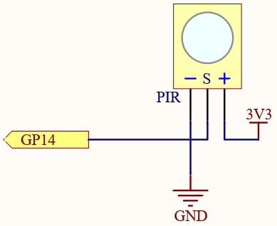
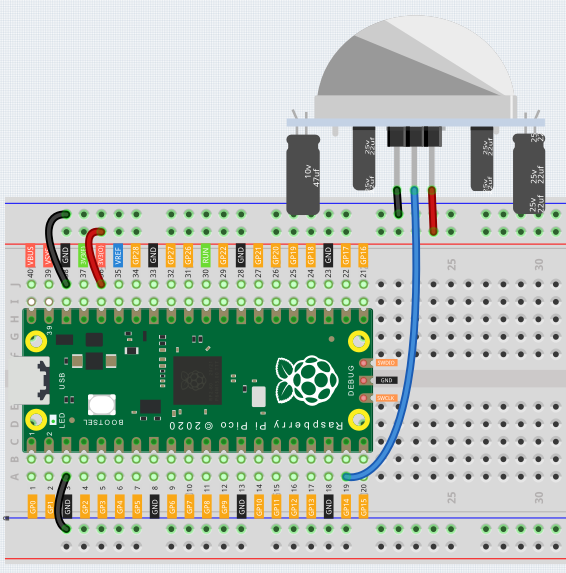

Note
Hello, welcome to the SunFounder Raspberry Pi & Arduino & ESP32 Enthusiasts Community on Facebook! Dive deeper into Raspberry Pi, Arduino, and ESP32 with fellow enthusiasts.
Why Join?
Expert Support: Solve post-sale issues and technical challenges with help from our community and team.
Learn & Share: Exchange tips and tutorials to enhance your skills.
Exclusive Previews: Get early access to new product announcements and sneak peeks.
Special Discounts: Enjoy exclusive discounts on our newest products.
Festive Promotions and Giveaways: Take part in giveaways and holiday promotions.
👉 Ready to explore and create with us? Click [here] and join today!
2.10 Detect Human Movement¶
Passive infrared sensor (PIR sensor) is a common sensor that can measure infrared (IR) light emitted by objects in its field of view. Simply put, it will receive infrared radiation emitted from the body, thereby detecting the movement of people and other animals. More specifically, it tells the main control board that someone has entered your room.
Schematic

When the PIR module detects someone passing by, GP14 will be high, otherwise it will be low.
Note
The PIR module has two potentiometers: one adjusts sensitivity, the other adjusts detection distance. To make the PIR module work better, you need to turn both of them counterclockwise to the end.
{kind=link}
Wiring

Code
Note
Open the
2.10_detect_human_movement.pyfile under the path ofeuler-kit/micropythonor copy this code into Thonny, then click “Run Current Script” or simply press F5 to run it.Don’t forget to click on the “MicroPython (Raspberry Pi Pico)” interpreter in the bottom right corner.
For detailed tutorials, please refer to Open and Run Code Directly.
import machine
import utime
pir_sensor = machine.Pin(14, machine.Pin.IN)
def motion_detected(pin):
print("Somebody here!")
pir_sensor.irq(trigger=machine.Pin.IRQ_RISING, handler=motion_detected)
After the program runs, if the PIR module detects someone nearby, the Shell will print out “Somebody here!”
Learn More
PIR is a very sensitive sensor. In order to adapt it to the environment of use, it needs to be adjusted. Let the side with the 2 potentiometers facing you, turn both potentiometers counterclockwise to the end and insert the jumper cap on the pin with L and the middle pin.
Note
Open the
2.10_pir_adjustment.pyfile under the path ofeuler-kit/micropythonor copy this code into Thonny, then click “Run Current Script” or simply press F5 to run it.Don’t forget to click on the “MicroPython (Raspberry Pi Pico)” interpreter in the bottom right corner.
For detailed tutorials, please refer to Open and Run Code Directly.
import machine
import utime
pir_sensor = machine.Pin(14, machine.Pin.IN)
global timer_delay
timer_delay = utime.ticks_ms()
print("start")
def pir_in_high_level(pin):
global timer_delay
pir_sensor.irq(trigger=machine.Pin.IRQ_FALLING, handler=pir_in_low_level)
intervals = utime.ticks_diff(utime.ticks_ms(), timer_delay)
timer_delay = utime.ticks_ms()
print("the dormancy duration is " + str(intervals) + "ms")
def pir_in_low_level(pin):
global timer_delay
pir_sensor.irq(trigger=machine.Pin.IRQ_RISING, handler=pir_in_high_level)
intervals2 = utime.ticks_diff(utime.ticks_ms(), timer_delay)
timer_delay = utime.ticks_ms()
print("the duration of work is " + str(intervals2) + "ms")
pir_sensor.irq(trigger=machine.Pin.IRQ_RISING, handler=pir_in_high_level)
Let us analyze its adjustment method along with the experimental results.

Trigger Mode
Let’s take a look at the pins with jumper cap at the corner. It allows PIR to enter Repeatable trigger mode or Non-repeatable trigger mode
At present, our jumper cap connects the middle Pin and L Pin, which makes the PIR in non-repeatable trigger mode. In this mode, when the PIR detects the movement of the organism, it will send a high-level signal for about 2.8 seconds to the main control board. We can see in the printed data that the duration of work will always be around 2800ms.
Next, we modify the position of the lower jumper cap and connect it to the middle Pin and H Pin to make the PIR in repeatable trigger mode. In this mode, when the PIR detects the movement of the organism (note that it is movement, not static in front of the sensor), as long as the organism keeps moving within the detection range, the PIR will continue to send a high-level signal to the main control board. We can see in the printed data that the duration of work is an uncertain value.
Delay Adjustment
The potentiometer on the left is used to adjust the interval between two jobs.
At present, we screw it counterclockwise to the end, which makes the PIR need to enter a sleep time of about 5 seconds after finishing sending the high level work. During this time, the PIR will no longer detect the infrared radiation in the target area. We can see in the printed data that the dormancy duration is always no less than 5000ms.
If we turn the potentiometer clockwise, the sleep time will also increase. When it is turned clockwise to the end, the sleep time will be as high as 300s.
Distance Adjustment
The centered potentiometer is used to adjust the sensing distance range of the PIR.
Turn the knob of the distance adjustment potentiometer clockwise to increase the sensing distance range, and the maximum sensing distance range is about 0-7 meters. If it rotates counterclockwise, the sensing distance range is reduced, and the minimum sensing distance range is about 0-3 meters.